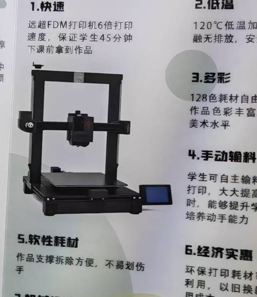

Shorter path from idea to object.
For STEM, art and maker classes where students need a tangible result inside a lesson cycle.
EDUCATION-FIRST 3D PRINTING
A low-barrier desktop 3D printing platform for schools, makerspaces and education distributors.

THE OPPORTUNITY
Education buyers do not only compare print quality. They compare setup time, teacher confidence, student participation, material handling and the evidence a distributor can bring to a school.
WHO IT IS FOR
For STEM, art and maker classes where students need a tangible result inside a lesson cycle.
For libraries, museums and community labs that need an approachable first machine and clear operating rituals.
For partners who need sample projects, training materials, spare-parts planning and an honest qualification flow.
PLATFORM OVERVIEW
The visible product direction is a desktop, open-frame 3D printing device with a single print head and touch display.
WHAT IS CONFIRMED
The current source is a product flyer, not a model specification sheet. The table below separates usable positioning from information that still needs engineering or compliance evidence.
LEARNING SYSTEM
A distributor can demonstrate a machine in minutes. A school adopts a programme when the first four lessons are easy to explain, run and repeat.
EVIDENCE BOUNDARY
Use this page to start a conversation, not to replace a final technical review. The next release should attach model-specific documents to every published number.
120°C, 128 colours, 16× faster, low odour, recyclable materials and course-count claims appear in the supplied flyer. They remain unconfirmed until test methods, material files and final model documents are available.
Model sheet, operating guide, material/SDS information, lesson samples, classroom risk notes, spare-parts route and support contact.
Target countries, electrical versions, age boundaries, sample policy, training language, packaging, warranty and service escalation.
Setup, material loading, ventilation guidance, failed-print response, supervision requirements and where to find lesson assets.
START A PILOT
Tell us who will use the machine and what needs to be proven. This form prepares an inquiry file you can download and send to your team.